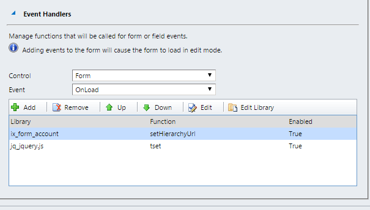
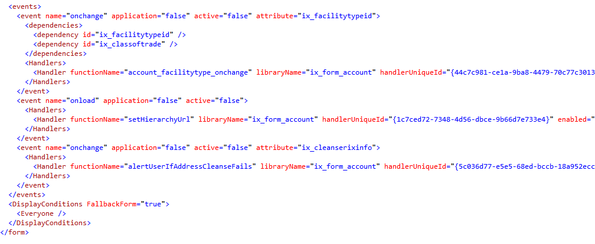

Dynamics CRM gives you the ability through the front-end to bind event handlers to a set of ui events.

This is one of the most likely areas to break during an upgrade, so I wanted to get a list of all event handlers in the system so we had an idea of what needed to be tested. Unfortunately after quite a bit of poking around, it became clear that this info isn't super easy to pull out of the SQL database. The problem is that this info is stored in the FormXml field of the SystemForm table.

Without being super familiar with querying against XML data in MSSQL, this took quite a bit of research. Posting the result
WITH x AS
(
SELECT FormId, e.Name, CAST(FormXml AS Xml) FormXml
FROM SystemForm sf
JOIN Entity e ON sf.ObjectTypeCode = e.ObjectTypeCode AND e.OverwriteTime = '1900-01-01 00:00:00.000'
WHERE e.Name = 'Account'
)
, y AS
(
SELECT
x.FormId,
x.Name Entity,
x.FormXml, -- Uncomment to see the full form xml
t.c.value('@name', 'varchar(max)') HandlerName,
t.c.value('@attribute', 'varchar(max)') AttributeName,
a.b.value('@libraryName', 'varchar(max)') Library,
a.b.value('@functionName', 'varchar(max)') FunctionName,
a.b.value('@enabled', 'varchar(16)') [Enabled],
t.c.query('.') [t.c.query],
a.b.query('.') [a.b.query]
FROM x
CROSS APPLY x.FormXml.nodes('/form/events/event') T(c)
OUTER APPLY t.c.nodes('Handlers/Handler') a(b)
WHERE t.c.value('count(Handlers/Handler)', 'int') > 0
)
SELECT
*
FROM y
-- WHERE Enabled = 'true' -- This will exclude non-attribute related rows
ORDER BY y.Entity, y.HandlerName, y.Library, y.FunctionName